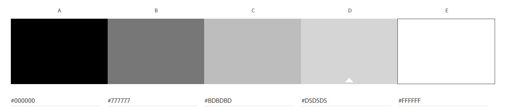
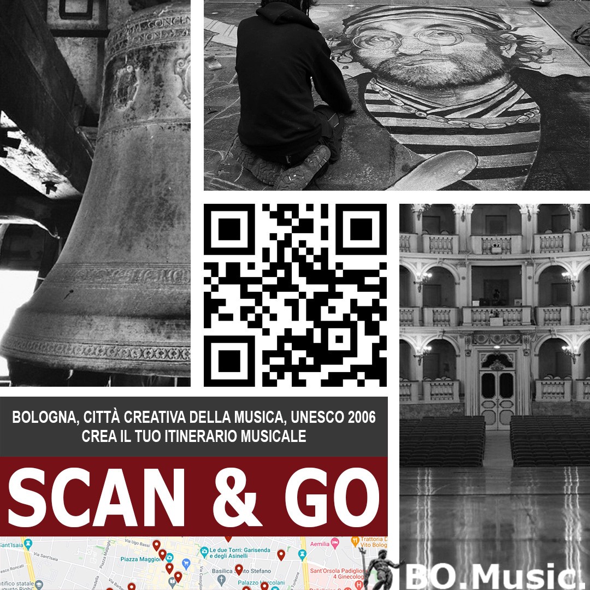

Il sito di BO.Music. intende allargare la platea di possibili turisti interessati non solo alla città, dal punto di vista architettonico-culturale e gastronomico, ma anche dal punto di vista musicale. Il sito intende, inoltre, promuovere la conoscenza di Bologna ai propri cittadini, che potranno anch’essi visitare e conoscere aspetti della loro città, non ancora conosciuti. Numerose sono le location nell’ambito della musica, dalle istituzioni museali, religiose, agli studi di registrazione nei quali sono state registrate le più famose canzoni dei numerosi e noti cantanti bolognesi, ai locali presso i quali si organizzano concerti ed eventi legati alla musica e tanto altro.
Il sito vuole offrire spunti per itinerari musicali a Bologna, dichiarata dall’UNESCO, Città Creativa della Musica, nell’anno 2006. Il progetto si prefigge l’obiettivo di attirare in città turisti amanti della musica, ma anche di mantenere costantemente vivo il ricordo di tale riconoscimento nei propri cittadini bolognesi.
• Turisti italiani, adulti, uomini e donne;
• Cittadini bolognesi, adulti, uomini e donne.
Immagine 1 - Tabella parametri di valutazione siti competitors.
Immagine 2 - Mappa del sito web.
Immagine 3 - Wireframe homepage del sito web BO.Music.
Immagine 4 - Wireframe documentazione del sito web.
Scelte grafiche rilevanti: Font: Monserrat (menu) + Open Sans (body).
Palette colori:
Immagine 5 - Palette colori utilizzati nel sito web.
• Linguaggio di markup: HTML;
• Linguaggio per la grafica web: CSS;
• Linguaggio di programmazione: JAVASCRIPT.
Ho scelto di utilizzare un template di Bootstrap, al quale ho apportato varie modifiche.
• SublimeText2 come text editor;
• FontAwesome per le icone;
• template Bootstrap “The band theme”;
• Adobe Color per la palette colori;
• Google Font per la scelta delle font;
• Google My Maps per creare la mappa navigabile degli itinerari musicali;
• Balsamiq per la realizzazione della mappa del sito e dei wireframe;
• Bootstrap per la grafica;
• Github per la pubblicazione;
• Adobe Color per la palette colori;
• Adobe Photoshop per creare il logo e la cartolina;
• Google Analytics per il conteggio dei visitatori del sito.
Immagine 6 - Tabella pro e contro analisi siti competitor.
Nei siti analizzati ho riscontrato elementi critici e punti di forza. Quasi tutti gli elementi critici riscontrati sono legati all’architettura informativa del sito. In alcuni casi, i contenuti ricchi e variegati non sono organizzati secondo criteri e schemi che il navigatore possa utilizzare per fruirne. L’assenza di questi criteri impedisce nel navigatore la corretta costruzione di aspettative sui contenuti, rendendo la navigazione difficile e in molti casi meccanica. Questi siti non consentono, quindi, al navigatore la corretta costruzione di una immagine del sistema (cit. D. Norman), in questi casi una corretta immagine dell’architettura informativa.
L’analisi dell’aspetto grafico rivela degli stili e delle impostazioni adeguati alle linee grafiche attualmente diffuse sul web. I siti non presentano al visitatore un aspetto datato, ma anzi immagini e appearance grafica relativamente “fresche”. Uno dei competitor ha rivelato una scelta di presentazione grafica e navigazione interessante, utilizzando un sito one page per esporre i contenuti. Il pattern one page mi è sembrata una scelta ottimale nei rapporti con il contenuto che ho scelto di divulgare, perché in numerosi punti rompe l’F-pattern consentendo una rilocazione percettiva dei processi dell’attenzione di fruizione dei contenuti.
Ho scelto di creare anche un logo ad hoc, con inserimento dell'elemento identificativo costituito da parte della Fontana del Nettuno di Bologna e nome del brand "BO.Music.".
Immagine 7 - Loghi BO.Music. (versione con carattere bianco e con carattere nero).
Il progetto comunicativo prende l’avvio da alcuni valori legati all’ambito della città e alla sua valorizzazione: cultura, fidelizzazione alla città.
L’obiettivo è quello di sviluppare tramite il sito un aggancio culturale al prodotto “Bologna, Città della Musica”, trascendendo l’immediatezza architettonico-culturale che il patrimonio della città espone per consentire una esplorazione della stessa su un altro piano: quello musicale.
Pertanto, nello specifico, il progetto si prefigge gli obiettivi di:
• incrementare offerta turistica della città di Bologna, con particolare riferimento al settore musicale;
• mantenere costantemente vivo il ricordo di tale riconoscimento nei propri cittadini bolognesi.
Ho ritenuto utile applicare la strategia della gamification, attraverso la quale gli utenti, dopo aver esplorato sul sito alcune delle istituzioni presenti in città, e visitato la pagina degli eventi, dove avranno la possibilità di acquistare direttamente i biglietti, potranno divertirsi giocando a creare il proprio itinerario musicale, navigando la mappa, contenente la segnalazione di vari punti di interesse musicale nella città di Bologna.
• Target primario: uomini e donne, over 30, amanti dei viaggi e della musica;
• Target secondario: istituzioni scolastiche per l’organizzazione di gite o uscite a tema musicale nella città di Bologna.
• Sensibilizzazione, approfondimento, divulgazione dell’informazione di Bologna, nominata Città della Musica dall'Unesco dal 2006;
• Incremento dell'informazione sulle proposte musicali per un itinerario musicale personalizzato a Bologna;
• Promozione e valorizzazione patrimonio musicale a Bologna;
• Incremento dell’engagement turistico sui luoghi di particolare interesse musicale a Bologna.
Intendo promuovere il sito web prevalentemente tramite Facebook, LinkedIn e tramite passaparola su gruppi WhatsApp. A tal proposito, ho creato una cartolina contenente un QR-Code che indirizza al mio sito per attirare e incuriosire le persone che la vedranno.
Immagine 8 - Cartolina disegnata per promozione sito web.
Immagine 9 - Numero di likes su Facebook al 17/05/2022.
Immagine 10 - Numero visualizzazioni post su LinkedIn al 18/05/2022.
Immagine 11 - Visite sul sito al 17/05/2022 (Google Analytics).
Immagine 12 - Visualizzazioni mia mappa "Crea il tuo itinerario musicale" al 17/05/2022 (Google Maps).
Immagine 13 - Accessi al sito BO.Music. da Bologna.
Tutti gli obiettivi che mi sono posta, sono stati raggiunti.